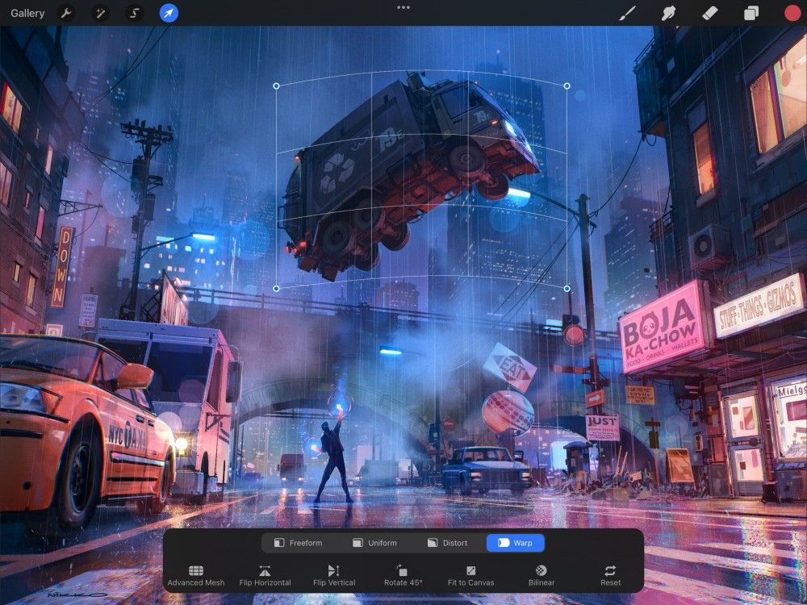
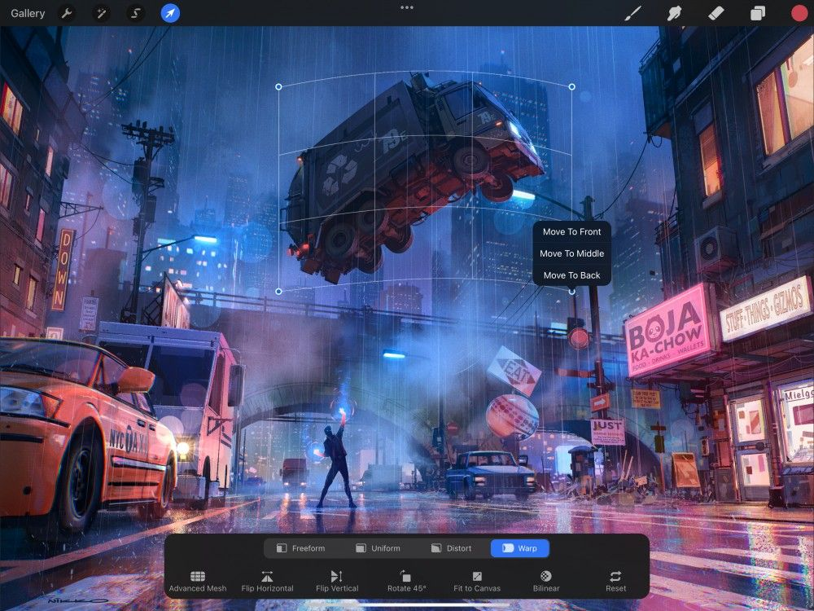
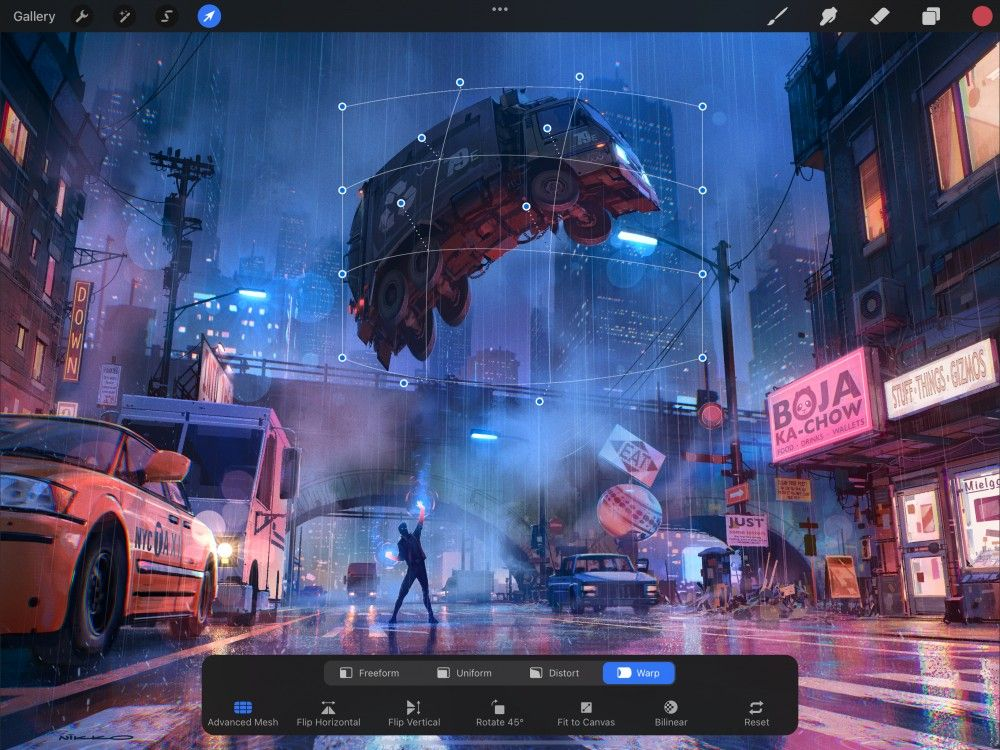

📖 Đã dịch sang tiếng Việt. Thuật ngữ chuyên môn giữ tiếng Anh — rê chuột để xem nghĩa (tooltip).
Warp
Gấp và quấn tác phẩm của bạn trong các chiều không gian kỳ ảo với Warp (bẻ cong).
Warp Mesh (lưới bẻ cong)
Di chuyển Warp mesh (lưới bẻ cong) để quấn và gấp nội dung.


Chạm nút Warp (bẻ cong) trên Transform toolbar (thanh công cụ biến đổi). Bounding box (hộp bao) trong chế độ Warp có viền đặc thay vì nét đứt di chuyển như các chế độ khác. Bên trong bounding box này bạn sẽ thấy Warp mesh (lưới bẻ cong) — một lưới phủ lên nội dung như một tấm lưới.
Bạn có thể kéo các góc, cạnh, hoặc lưới bên trong để bẻ cong bất kỳ phần nào của nội dung theo bất kỳ hướng nào. Bạn thậm chí có thể kéo một nút góc về giữa lưới để gấp một phần ảnh chồng lên chính nó.
Node Control (điều khiển nút)
Quấn các phần ảnh lên trên các phần khác — hoặc dưới chúng.


Chạm một nút để gọi các điều khiển vị trí.
Giờ bạn có thể di chuyển nút đó lên trước, giữa, hoặc sau. Các vị trí này quyết định nút của bạn chồng lên hay nằm dưới các nút khác.
Khi bạn di chuyển một nút mà không gọi menu này, nó sẽ di chuyển lên trước theo mặc định.
Advanced Mesh (lưới nâng cao)
Để kiểm soát chính xác, hãy thêm và điều chỉnh riêng từng nút phụ trong lưới.

Chạm nút Advanced Mesh (lưới nâng cao) trên Transform toolbar (thanh công cụ biến đổi) để gọi thêm nút cho điều khiển tinh hơn.
Chế độ này đặt một nút ở mỗi giao điểm của Warp mesh (lưới bẻ cong). Giờ bạn có thể điều chỉnh thủ công từng điểm điều khiển, thay vì kéo một phần của lưới.
Still have questions?
If you didn't find what you're looking for, explore our video resources on YouTube or contact us directly. We’re always happy to help.